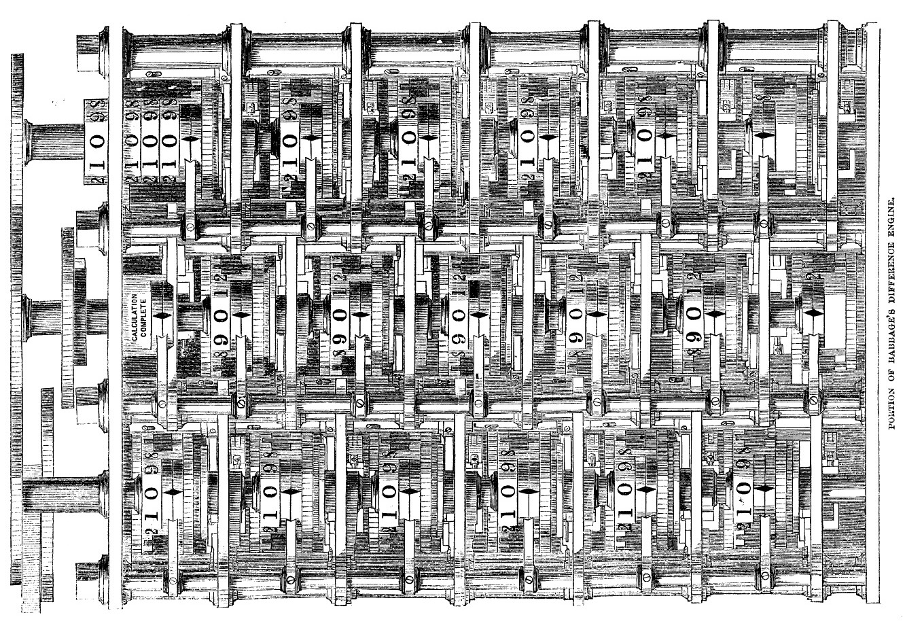

Work¶
{kind=link}

“Ars longa, vita brevis” – Hippocrates¶
Why me?¶
I love abstractions, especially when solving problems that require speed rather than depth. Abstraction as a tool, coupled with reasoning with analogy or proxy, allows me to move quickly and, more importantly, disciplines me to the scope of the immediate goal without getting caught up in unnecessary details.
I lied. I hate abstractions, or more precisely, the bugs that love to hide between these interfaces. These subtle defects exploit our naive assumptions and ignorance. This is when I find it imperative to reason from first principles. Deliberate bottom-up thinking enables me to build robust systems that won’t crumble under randomness of the real world. Though I must confess, I often enjoy taking apart black boxes for the sheer fun of it.
I’m not afraid of the dark. The uncertainty that new problems present doesn’t deter me. I take small but deliberate steps to overcome the daunting feeling of getting started, especially when I find myself without a map or guardrails.
I know what it takes. Technology alone isn’t enough to keep the lights on. I understand the business and social incentives that influence engineering decisions. I recognize that creating successful products requires balancing technical innovation with market demands and economic realities. This perspective helps me keep sight of the big picture —— the future we’re working towards.
My toolbox and domain knowledge: C, C++, Python, SystemVerilog, Computer Architecture, Digital Design and Verification
My ask¶
I am interested in working with physical and/or digital design, verification/test engineers during summer ‘25.
If your team is hiring interns and you think I’d be a good fit, I’d love to chat.
Please write to me at: shreesh [at] cmu [dot] edu
- You can learn more about me here -
Resume: attachment (request access)
Webpage: ntr0pie.github.io
GitHub: github.com/ntr0pie/
LinkedIn: linkedin.com/in/xshreesh/